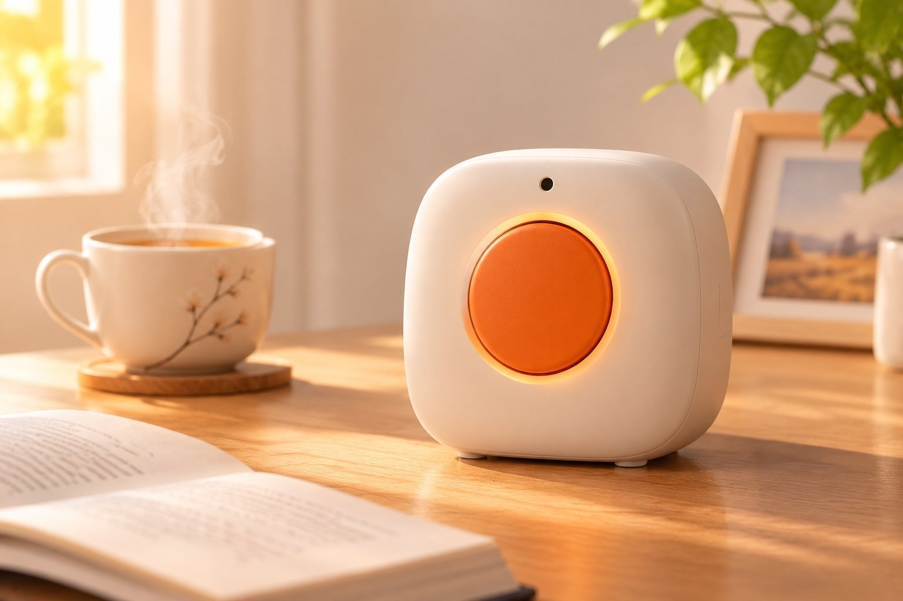

Guardian Star
它不防跌倒，
它防「死寂」。
该有人的房间里，人忽然找不到了——
它不是报警器。它先开口问一句。

直径 60 毫米，凸起 4 毫米。手抖、指关节变形也摸得到；按下去有 4 毫米行程和一声轻响——知道自己按上了。
24 GHz，9 个距离门，只回答一个问题：这屋里还有没有人。它不知道你是坐着还是躺着。
分别对应一次异常里可能出现的四种情况：找不到了、出门了、没事了、一直没回应。
它不问「你怎么摔的」，只问「你还在吗」。
雷达只判断人在不在，不判断姿势。所以它从不假装知道你摔没摔——那是另一类设备该干的事。
门开了，它就知道你出门了，绝不瞎报警。
门磁是一票否决权。只要门开过，它当天就不再多问一句。买菜、遛弯、去医院，都不会触发。
拍一下按键，就是「我没事」。
不用解锁、不用找手机、不用对着它说话。老人手边一枚大按键，一巴掌拍下去，这件事就过去了。
没人应答，才轮到家属。
先问一次，换个说法再问一次，都安静了才推送。家属收到的那一条，是它已经确认过两次的那一条。
一份敢写「我不做什么」的说明，比一份全是优点的说明可信。这四条是物理与成本决定的，不是还没做完。
所有部件都是成品模块，不需要打板，也不需要焊接。
首发体验
¥199整机
包含硬件终端、一年 AI 陪伴服务及家属远程提醒功能
量产形态目标价 · 演示页面，暂未开放支付